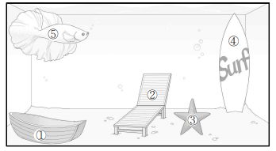

🔊 대화 전체 듣기 (1.1x)
QUESTION 04

그림에서 대화의 내용과 일치하지 않는 것을 고르시오.
① 배 (Bottom left)
② 비치 체어 (Center)
③ 불가사리 (Next to the chair)
④ 서핑 보드 (Two on the right side)
⑤ 물고기 (Top left)
채점하기
Voca & Phrase
받아쓰기 시작 (빈칸 3개 강화)
🔊 문장 다시 듣기
다음 문장